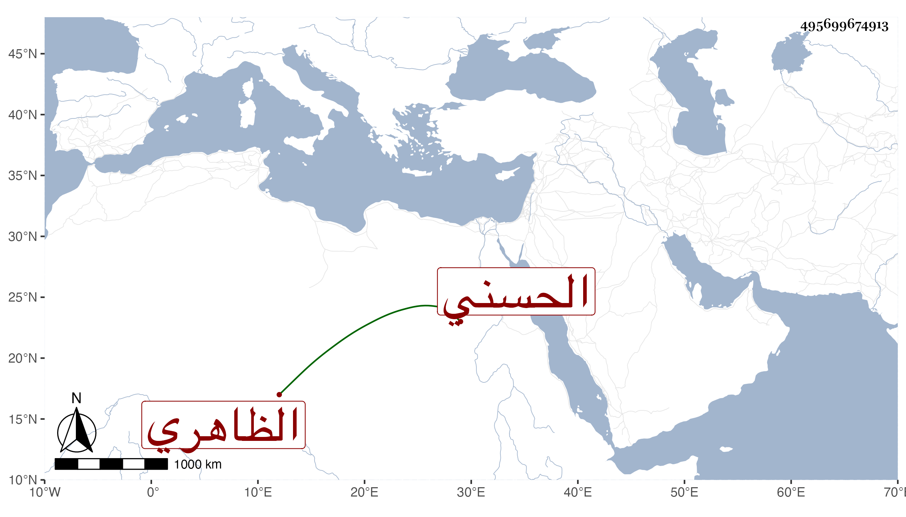

0902Sakhawi.DawLamic.ITO20230111-ara1.EIS1600.495699674913
Biography ID: 495699674913
722
قراقجا الحسني الظاهري برقوق . تأمر بعد المؤيد وصار في أيام الأشرف من الطبلخانات وثاني رؤوس النوب بل تقدم إلى أن استقر به الظاهر رأس نوبة النوب في سنة اثنتين وأربعين ثم نقله فيها إلى الأخورية الكبرى فأقام فيها سنين وبنى أملاكا حبس أكثرها على مدرسته التي أنشأها بالقرب من قنطرة طقزدمر الحموي وعمل بها تصوفا وشيخا وأرباب وظائف وقرر في خطابتها وكذا في مشيختها ظنا السيد الصلاح الأسيوطي وكذا عمل أيضا مسجدا ببعض الأماكن قرر في إمامته بعض طلبة المالكية وكان دينا متواضعا عفيفا حسن السيرة وقورا حشما أسمر معتدل القد شيق الحركة أبيض اللحية مستديرها متقدما في الفروسية من محاسن أبناء جنسه فردا فيهم . مات هو وابن له في يوم السبت ثامن عشر صفر سنة ثلاث وخمسين بالطاعون وشهد السلطان الصلاة عليهما من الغد ودفنا في قبر واحد رحمهما الله .
